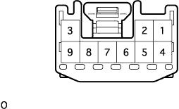

Sliding door motor ASSY No.1 Single inspection |
| 1. Slide door motor ASSY No.1 inspection |
Sliding door motor operation inspection
Inspect the operation when the battery voltage is applied between the connector terminals.
| connection | Direction of operation |
|---|---|
| Battery Plus ← → 6 terminals Battery minus ← → 8 terminals | High -speed operation (right rotation) |
| Battery Plus ← → 7 terminals Battery minus ← → 8 terminals | Low -speed opening operation (right rotation) |
| Battery Plus ← → 8 terminals Battery minus ← → 6 terminals | High -speed closed operation (left rotation) |
| Battery Plus ← → 8 terminals Battery minus ← → 7 terminals | Low -speed closed operation (left rotation) |
|  |
Clutch conductor inspection
Use SST (Toyota Electrical Tester) to check the conversation between terminals.
| Terminal number | standard |
|---|---|
| 3 ← → 9 | There is an conductor |
Pulse sensor guidance inspection
The battery voltage is applied to each terminal of the connector, and the conversation between each terminal is inspected using SST (Toyota Electrical Tester).
| Measurement conditions | Terminal number | standard |
|---|---|---|
| Battery Plus ← → 2 terminals Battery minus ← → 5 terminals | 4 ← → 5 | There is an conductor |
| Battery not connected | 4 ← → 5 | Without conduction |
| Battery Plus ← → 2 terminals Battery minus ← → 5 terminals | 1 ← → 5 | There is an conductor |
| Battery not connected | 1 ← → 5 | Without conduction |